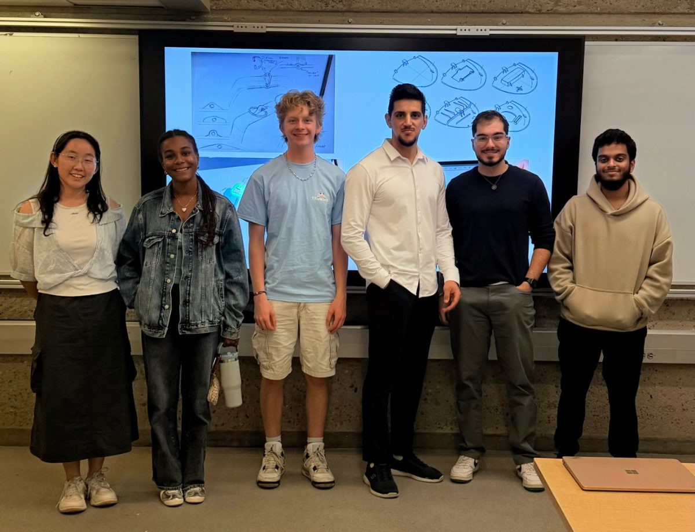
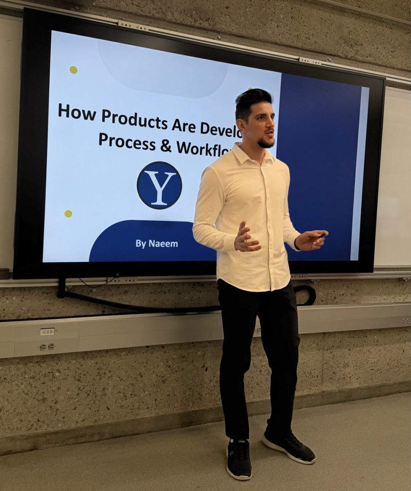
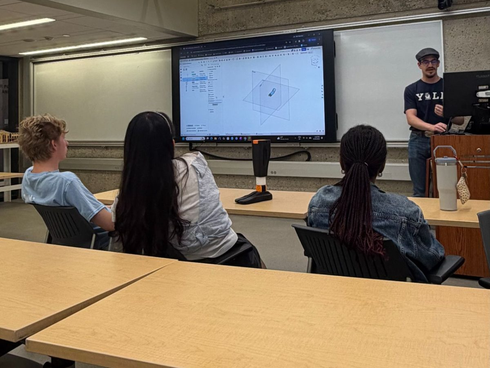
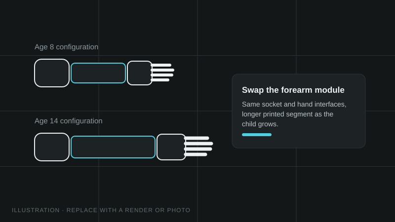

Prosthetics
GrapGrow: Modular Pediatric Prosthetic Arm
A modular prosthetic arm for children, designed to grow with them instead of being rebuilt. I'm developing it with a team of Yale University students.
In collaborationYale UniversityUniversity of New Haven



The question
Children outgrow a prosthetic arm quickly, and each new arm costs time and money. Can one modular design be resized by swapping parts, so a child keeps the same device as they grow?
The team
GrapGrow is a collaboration between students from Yale University and me, a graduate student at the University of New Haven. We started in the Fall 2026 semester, and the design is still in development.
What we're working on
We split the arm into the main challenges a child and their family would meet:
- The socket: how the arm attaches comfortably and securely to the residual limb.
- The extension mechanism: how the arm lengthens so it can grow with the child.
- The attach/detach mechanism: a quick way to swap accessories on and off the arm.
- The accessories: a phone holder, a game controller holder and a general holder for light, everyday objects, so the child can hold things easily.

Design approach
The arm is designed in SOLIDWORKS as swappable segments with standard interfaces. Segment sizes come from pediatric anthropometric data for ages 8 to 14, and the parts are 3D printed so new sizes can be made quickly and cheaply.
Next steps
Finalize the socket and extension mechanism, prototype the accessory interface, then test fit and comfort across the age range and choose printable materials that balance strength, weight and skin contact.